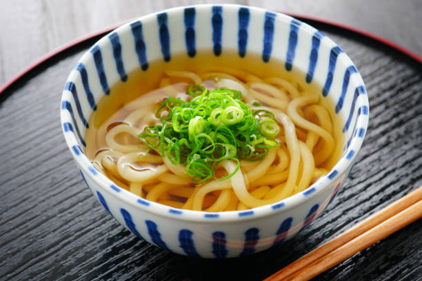

Between ramen and udon dishes, I'm not quite sure what's more tasty.
Recipe SourceCook udon noodles according to packet directions, or recipe if you're making them by hand.
Place dashi, soy sauce, mirin, salt and sugar into a deep bowl, then pour boiling water over the top.
Take cooked udon noodles and slide into the soup base.
Top with sliced spring onion, bonito and chilli flakes.